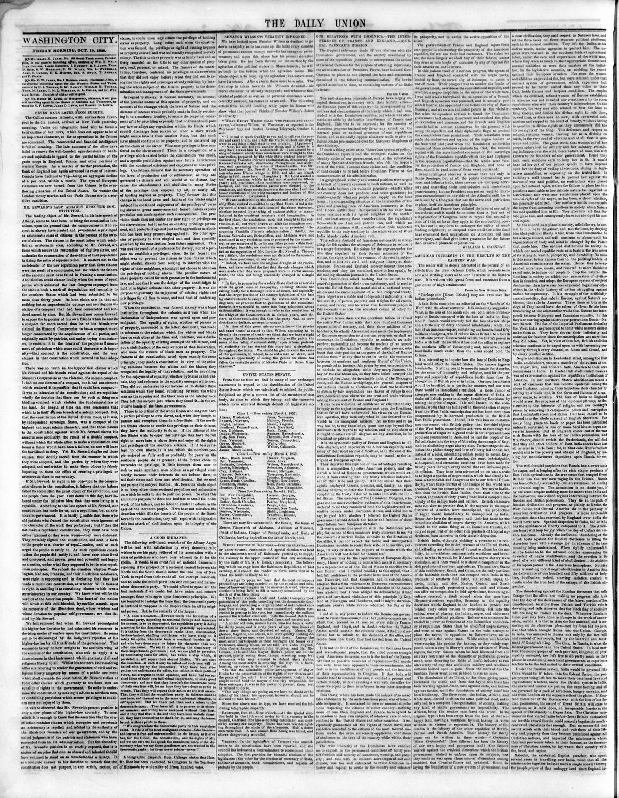

Government bad already discovered and crushed the plan of revolution and
https://www.loc.gov/resource/sn82003410/1855-10-19/ed-1/?sp=2

See the original pageVer la página original
France and England conspired with the negro party, headed by Baez, the secret ally of Solouque, to excite a war of races. Their prospect was to murder the heads of the government, overthrow the constitutional republic, and establish a negro despotism on the ashes of the white race. I was told weeks beforehand the co-operation of a French and English squadron was promised, and it actually presented itself at the appointed time before the city of Santo Domingo, and at certain indicated points in the vicinity. But when the squadron arrived it found the Dominican government had already discovered and crushed the plan of revolution and massacre, and the French and English consuls had to content themselves for the present with using the squadron and their diplomatic flags to protect the conspirators from punishment. Their consulates were made the rendezvous and asylum of the negro leaders of the frustrated plot; and when the Dominican authorities demanded these notorious criminals for trial, the consuls
How to cite this articleCómo citar este artículo
The Daily Union. (1855). Washington [D.C.], October 19, 185519 de octubre de 1855. DR in the American PressRD en la Prensa Norteamericana. Library of Congress, Chronicling America: https://www.loc.gov/resource/sn82003410/1855-10-19/ed-1/?sp=2
ReferencesReferencias
Library of Congress, Chronicling America: The Daily Union, October 19, 185519 de octubre de 1855.
Send an observationEnviar una observación
Does this article connect with your family, your town, or something you know? Did we get something wrong? Write to us. Observations go to the editor's inbox and are read by a person.¿Este artículo conecta con su familia, su pueblo o algo que usted conoce? ¿Nos equivocamos en algo? Escríbanos. Las observaciones llegan al buzón del editor y las lee una persona.
Send observationEnviar observación